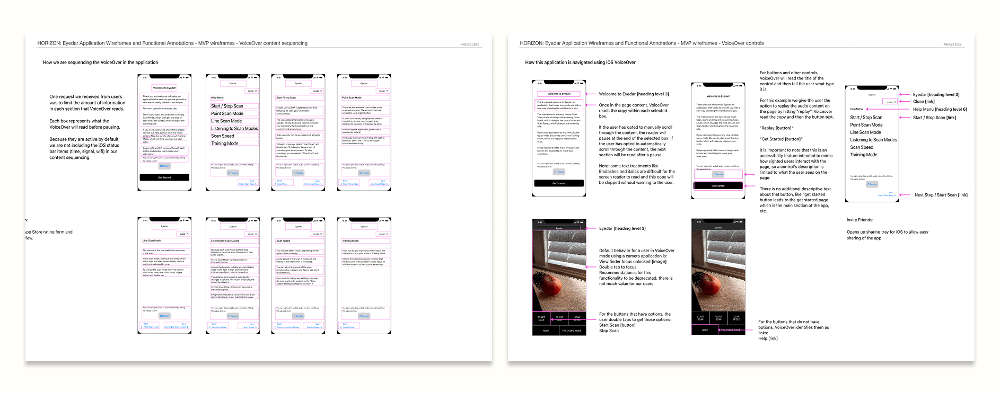

The Challenge
Designing for blind users isn't about adding accessibility features to a visual interface. It requires abandoning visual paradigms entirely. Eyedar needed an interaction model that blind and visually impaired users could learn, trust, and operate confidently while moving through physical space.
The core constraint: every interaction had to be discoverable and executable without sight. No buttons. No screen hierarchy. No visual confirmation. The interface would live entirely in gesture, sound, and haptic feedback.
My Role
Senior UX Architect, responsible for interaction design, user flows, and UX writing. I led user testing sessions with blind participants and created all training materials and instructions-for-use documentation.
Research & Discovery
Our research combined interviews, usability testing, and field observation with blind users. I synthesized findings into design documentation that guided both product design and development. Early testing challenged our assumptions quickly. One example: the placement of the audio cue for "end of section" wasn't registering clearly. For a sighted user, this would be like scrolling past the content into empty space without realizing the page had ended. Under tight deadlines, we rapidly prototyped and tested multiple options to ensure that the cue was landing in the expected location. Small details like this carried outsized weight when every interface signal had to land without visual backup.
Users also told us they needed a slower ramp. The audio landscape vocabulary was learnable, but not instantly. This insight drove a multi-stage onboarding process that introduced capabilities progressively rather than all at once. We conducted four rounds of usability testing with blind users, iterating on the interaction model and audio vocabulary until we achieved a flow that was both effective and delightful.

Key Design Decisions
1. Gesture vocabulary over menu hierarchy:
Traditional mobile interfaces rely on spatial memory: users remember where buttons live on screen. That model fails completely for blind users in motion. I relied on user feedback to design a gesture vocabulary using swipe patterns and tap zones that users could execute confidently without visual reference. The tradeoff: learnability. Although we were leveraging standard Speak Screen and VoiceOver functionality, each new application requires upfront training and familiarization that a visual menu does not. This led directly to the onboarding approach below.
2. Audio landscape as primary feedback: Our developer leveraged LiDAR data and spatial audio to create a 3D soundscape that represented the user's environment. I worked closely with the team on audio engineering to refine how different sounds would represent various objects and distances. For example, closer objects produced louder, more distinct sounds, while distant objects were softer and more diffuse. This design choice allowed users to build a mental map of their surroundings through auditory cues alone. Speed of scan, frequency and sound type were all variables we tested and refined through user feedback.
3. Progressive onboarding through documentation: Because the interface had no visual safety net, users needed to build confidence before real-world use. I developed the Instructions For Use at a sixth-grade reading level that introduced the audio vocabulary incrementally. I advocated for an incremental approach that built on blind users' existing spatial navigation abilities. Familiar skills reinforced new learning, building confidence before introducing complexity. We ensured that testers could successfully navigate simple environments before progressing to more complex scenarios.

Outcome
Eyedar launched as a functional application and received industry recognition including 2x Grand Clio Health, 2x Gold Clio Health, Silver Pencil at One Show, Silver Cannes Lion, and a Manny Award.
Reflection
This project fundamentally changed how I approach accessibility. Compliance checklists are a starting point, not a destination. The real work is designing for lived experience, which requires direct collaboration with the people you're designing for. I've carried that principle into every project since.
Client
Horizon Pharmaceuticals
Discipline
Accessibility Design
Application Design
Interaction Design
UX Writing
Role
Senior UX Architect
Year
2022
Technologies
LIDAR Sensors
Spatial Audio
iOS
Scan Speak
VoiceOver
Awards
2x Grand Clio Health
2x Gold Clio Health
3x Gold Pencil, One Show
Silver Cannes Lion
Manny Award